Escribir el pseudocódigo de un algoritmo que lea un número entero positivo $n$ (validar entrada)
e invierta sus dígitos, imprima el número resultante.
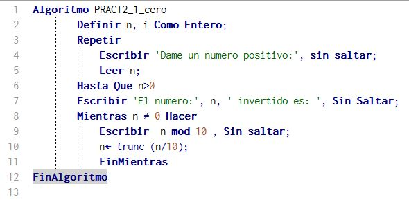
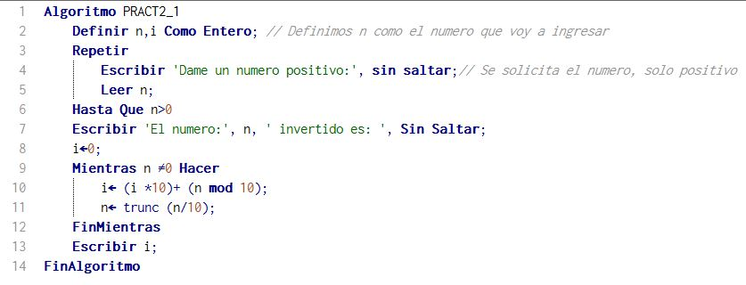
Ejercicio
Escribir el pseudocódigo de un algoritmo que implemente ciclos para determinar e
imprima todos los subconjuntos no vacíos del conjunto $\{ 1,2,3,4,5\}$.
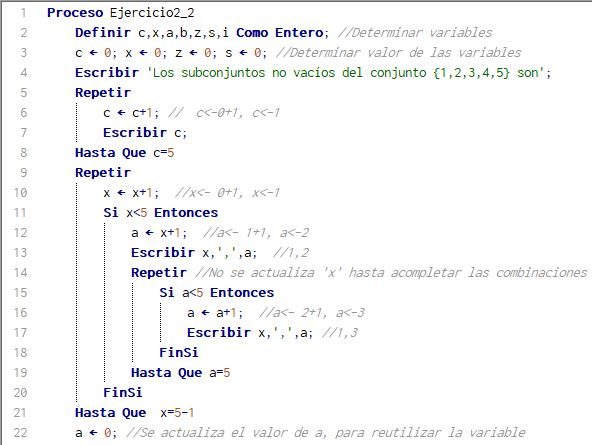
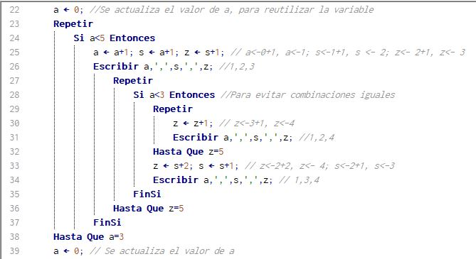
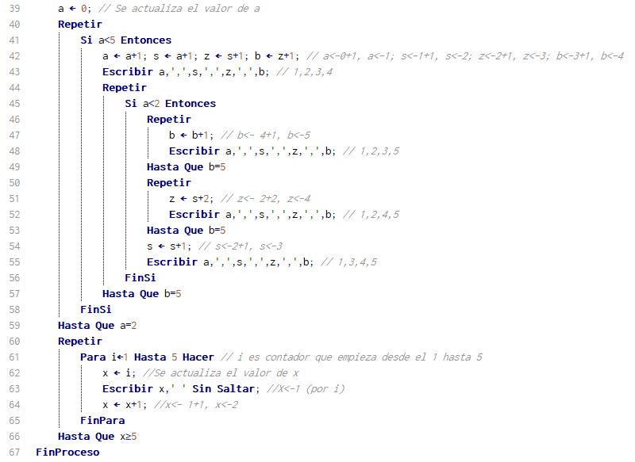
Ejercicio
Escribir el pseudocódigo de un algoritmo que lea un número entero positivo $n$ (validar entrada)
y determine si $n$ es palindromo. Imprima un mensaje adecuado.
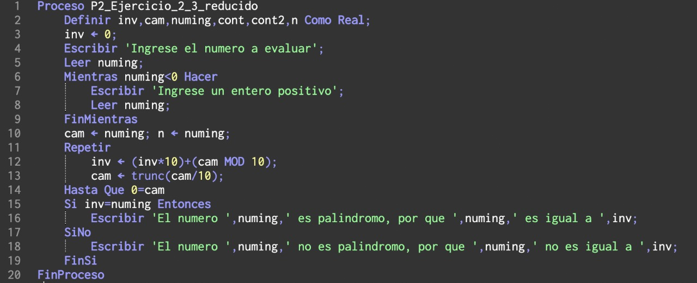
Ejercicio
Escribir el pseudocódigo de un algoritmo que lea un número entero positivo $k$
(validar entrada) y encontre el número entero positivo $n$ más pequeño tal que
la suma de los $n$ primeros números naturales exceda el valor de $k$.
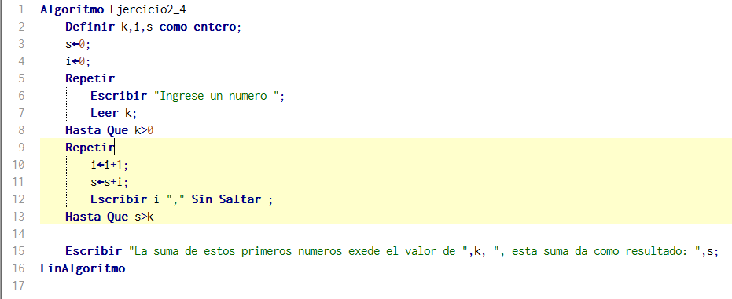
Ejercicio
Escribir el pseudocódigo de un algoritmo que escriba la tabla de multiplicar del
$1, 2,\ldots ,10$
Cada tabla de multiplicar se debe imprimir de la siguiente manera. Por ejemplo
para la tabla de multiplicar del $3$, se debe imprimir la tabla:
\begin{align*}
1 &\times 3 = 3\\
2 &\times 3 = 6\\
3 &\times 3 = 9\\
4 &\times 3 = 12\\
5 &\times 3 = 15\\
6 &\times 3 = 18\\
7 &\times 3 = 21\\
8 &\times 3 = 24\\
9 &\times 3 = 27\\
10 &\times 3 = 30\\
\end{align*}
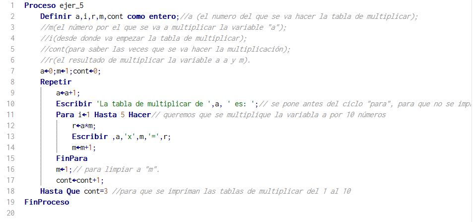
Ejercicio
Para encontrar el Máximo Común Divisor (MCD) de
dos números se puede implementar el algoritmo de Euclides:
Dados $a,b \in \mathbb{N}$
con $a>b$ (si $a=b$, entonces $\mathrm{MCD}(a,b)=a$), se
divide $a$ entre $b$, obteniendo el cociente $q_{1}$ y el resto
$r_{1}$. Si $r_{1} \not= 0$
se divide $r_{1}$ entre $b$, obteniendo el
cociente $q_{2}$ y el resto $r_{2}$.
Si $r_{2} \not= 0$, se divide $r_{1} $ entre $r_{2}$,
para obtener $q_{3}$ y $r_{3}$, y así sucesivamente.
Se continúa el proceso hasta que se obtiene un resto igual a $0$.
El resto anterior a cero es entonces
el Máximo Común Divisor de los números $a$ y $b$.
Se denota el Máximo Común Divisor de $a$ y $b$ por $\mathrm{MCD}(a,b)$
Escriba un algoritmo que lea dos números enteros positivos $a$ y $b$ (validar entradas),
e implemente el algoritmo de Euclides para encontrar el Máximo Común Divisor de $a$ y $b$.
Imprima el resultado.
Ejercicio
Un número entero positivo $n$ es perfecto si la suma de todos sus
divisores positivos (excluido el mismo) es igual a $n$.El primer número perfecto
es $6$, ya que los divisores positivos de $6$ son $1, 2, 3$ y $1 + 2 + 3 = 6$.
Escribir un programa que encuentre los cinco primeros
números perfectos.
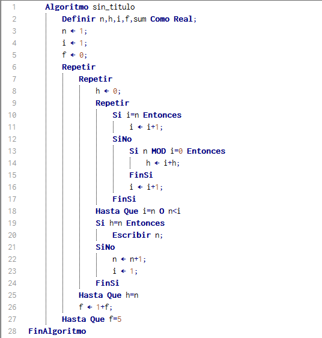
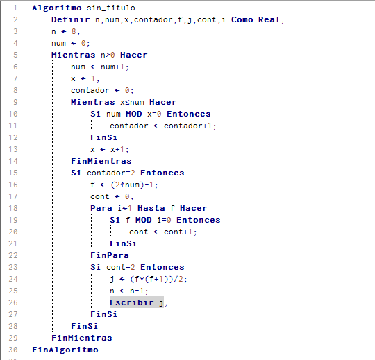
Ejercicio
Conjetura de ULAM. Recibe su nombre en honor del matemático S. Ulam.
Inicia con cualquier número entero positivo.
Si el número es par, divídelo entre $2$. Si es impar, multiplícalo por $3$ y sumale $1$.
Obtenga sucesivamente números enteros repitiendo el proceso. A esta sucesión se le
llama sucesión de Ulam.
Al final, obtendra el número $1$, independientemente del entero inicial.
Por ejemplo cuando el entero inicial es $26$ la sucesion de Ulam es:
$$26,13,40,20,10,5, 16,8,4,2,1$$
Escribir el pseudocódigo de un algoritmo que solicite un número entero positivo $n$
(Validar entrada), e imprima la sucesión de ULAM correspondiente a $n$.
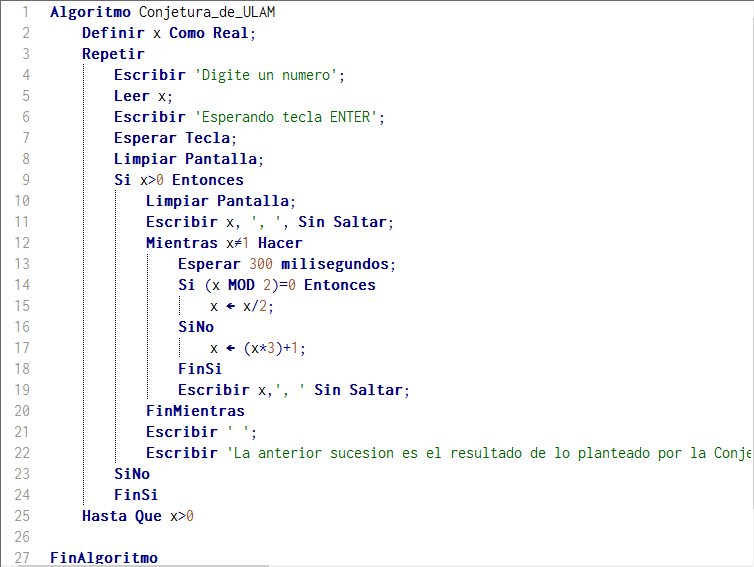
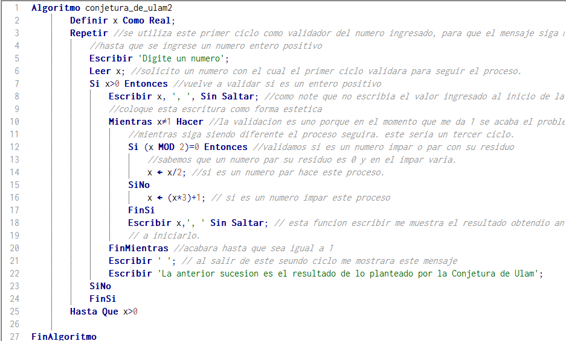
Ejercicio
El INE desea construir un programa para contabilizar los votos. En la elección hay cinco
candidatos, los cuales se representan con los valores comprendidos de $1$ a $5$.
Escribir el pseudocódigo de un algoritmo que determine el número de
votos de cada candidato y el porcentaje que obtuvo respecto al total de los votantes.
El usuario ingresará los votos de manera desorganizada, tal y como se obtienen
en la elección, el final de datos se representa por un cero.
Un ejemplo del ingreso de los votos es el siguiente:
$$2 \, 5 \, 5\, 4\, 3\, 4\, 4\, 5\, 1\, 2\, 4\, 3\, 1\, 2\, 4\, 5\, 0$$
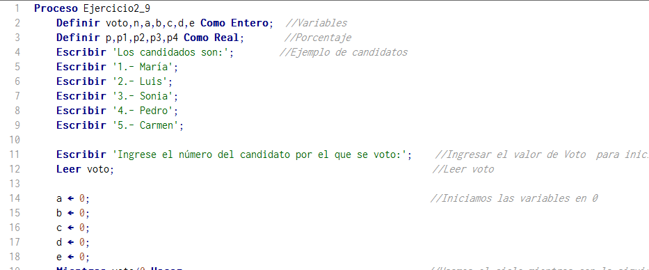
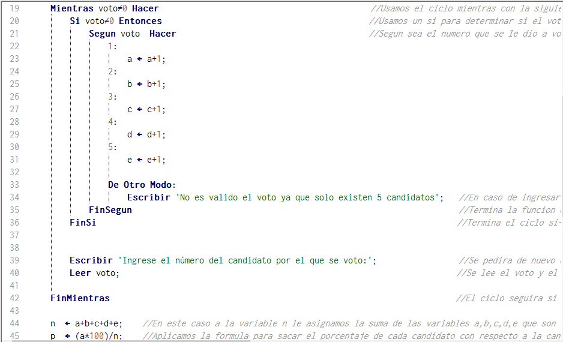
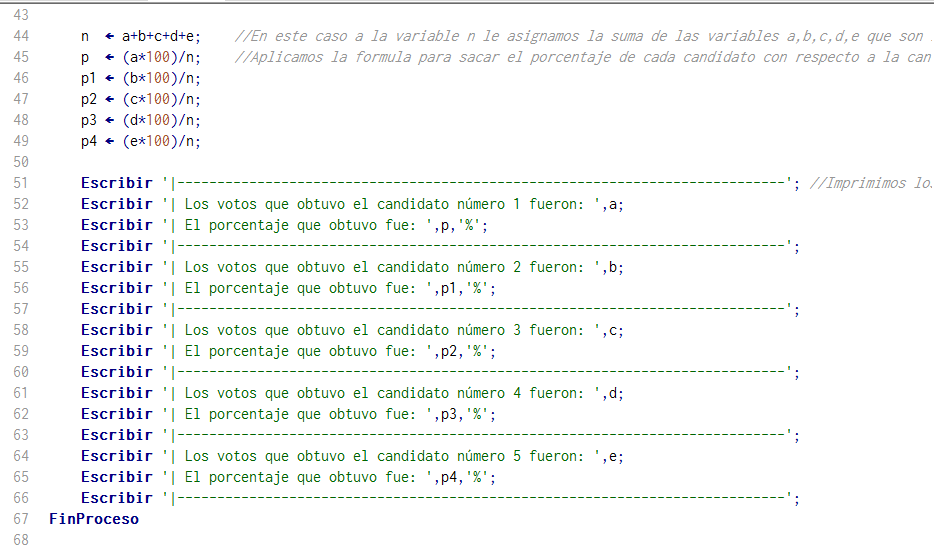
Ejercicio
El valor de $\pi$ se puede aproximar mediante la serie de Leibniz.
Consideremos la sucesión de número reales $\displaystyle{\left\{(-1)^{k}\frac{4}{2k+1}\right\}_{k=0}^{\infty}}$.
Para cada $n \in \mathbb{N}\cup \{0\}$, se define la $n$-ésima suma parcial de la sucesión como:
$$S_{n}:=\sum_{k=0}^{n} (-1)^{k}\frac{4}{2k+1} = \frac{4}{1} - \frac{4}{3} + \frac{4}{5} - \frac{4}{7} + \frac{4}{9}+ \cdots + (-1)^{n}\frac{4}{2n+1}$$
A la sucesión de sumas parciales $\{ S_{n}\}_{n=1}^{\infty}$ de la sucesión $\displaystyle{\left\{(-1)^{k}\frac{4}{2k+1}\right\}_{k=0}^{\infty}}$
se le llama Serie de Liebniz. Se puede demostrar que la serie de Liebniz es convergente y converge a $\pi$. Esto es,
$$\lim_{n \to \infty} S_{n}= \pi.$$
Denotamos esto de la siguiente manera: $$\sum_{k=0}^{\infty} (-1)^{k}\frac{4}{2k+1}= \pi$$
Escribir el pseudocódigo de un algoritmo que solicite al usuario un número entero positivo $n$ (validar la entrada) y calcule e imprima la aproximación a $\pi$ dada por la $n$-ésima suma parcial $S_{n}$ de la serie de Liebniz.
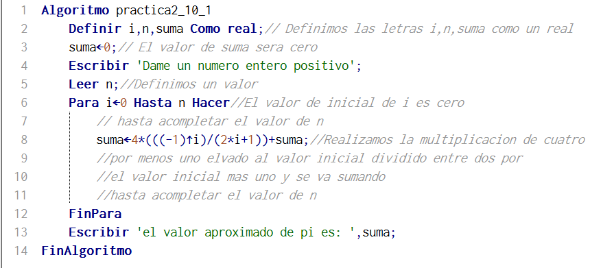
Ejercicio
El valor de $\pi$ se puede aproximar mediante la serie de Nilakantha.
Consideremos la sucesión de números reales $\{x_{k}\}_{k=0}^{\infty}$ cuyos términos estan dados por:
\begin{align*}
x_{0}&:=3\\
x_{k}&:= (-1)^{k+1}\frac{4}{2k \cdot (2k+1) \cdot (2k+2)}, \, \, \, \, \text{ para } k\in \mathbb{N}
\end{align*}
Esto es, los primeros términos de la sucesión son:
$$3, \, \, \frac{4}{2\cdot 3\cdot 4},\, \, -\frac{4}{ 4\cdot 5\cdot 6},\, \,
\frac{4}{ 6\cdot 7 \cdot 8} ,\, \, -\frac{4}{ 8\cdot 9\cdot 10}, \ldots $$
Para cada $n \in \mathbb{N}$, se define la $n$-ésima suma parcial de la sucesión como:
$$S_{n}:=3 + \sum_{k=1}^{n} \frac{4}{2k \cdot (2k+1) \cdot (2k+2)} = 3 +
\frac{4}{2\cdot 3\cdot 4} - \frac{4}{ 4\cdot 5\cdot 6} +
\frac{4}{ 6\cdot 7 \cdot 8} - \frac{4}{ 8\cdot 9\cdot 10}+ \cdots $$
A la sucesión de sumas parciales $\{ S_{n}\}_{n=1}^{\infty}$ de la sucesión $\{x_{k}\}_{k=0}^{\infty}$ definida como antes se le llama Serie de Nilakantha . Se puede demostrar que la serie de Nilakantha es convergente y converge a $\pi$, i.e.
$$\displaystyle{\lim_{n \to \infty} S_{n}}= \pi.$$
Escribir el pseudocódigo de un algoritmo que solicite al usuario un número entero positivo $n$ (validar la entrada) y calcule e imprima la aproximación a $\pi$ dada por la $n$-ésima suma parcial $S_{n}$ de la serie de Nilakantha.
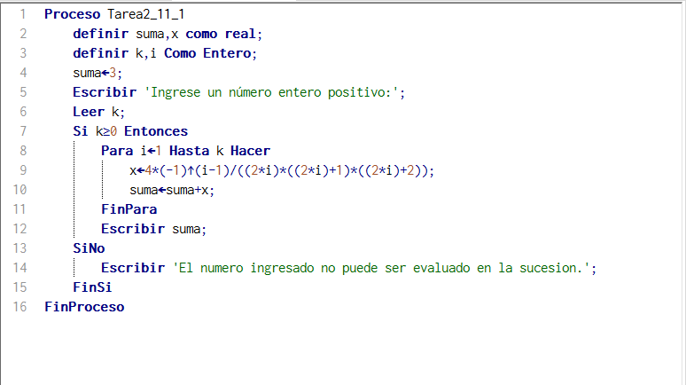
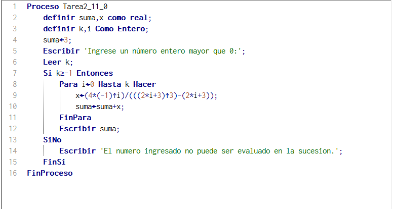
Ejercicio
Sea $x \in \mathbb{R}$. Consideremos la sucesión de número reales
$\displaystyle{\left\{(-1)^{k}\frac{x^{2k+1}}{(2k+1)!}\right\}_{k=0}^{\infty}}$.
Para cada $n \in \mathbb{N}$, se define la $n$-ésima suma parcial de la sucesión
como:
$$S_{n}:=\sum_{k=0}^{n} (-1)^{k} \frac{x^{2k+1}}{(2k+1)!} = x - \frac{x^{3}}{3!} +
\frac{x^{5}}{5!}+ \cdots + (-1)^{n} \frac{x^{2n+1}}{(2n+1)!}$$
La sucesión de sumas parciales $\{ S_{n}\}_{n=1}^{\infty}$ de la sucesión
$\displaystyle{\left\{(-1)^{k}\frac{x^{2k+1}}{(2k+1)!}\right\}_{k=0}^{\infty}}$
es la serie de Taylor de la función $\mathrm{Sen}(x)$. Se puede demostrar
que esta serie es convergente y converge a $\mathrm{Sen}(x)$.
Escribir el pseudocódigo de un algoritmo que solicite al usuario un número
real $x$, un número entero positivo $n$ (validar la entrada) y calcule e imprima la $n$-ésima
suma parcial $S_{n}$ de la serie de Taylor de la función $\mathrm{Sen}(x)$.
Ejercicio
El matemático italiano Leonardo Fibonacci propuso el siguiente problema.
Supongamos que un par de conejos tiene un par de crías cada mes y cada nueva pareja se hace
fértil a la edad de un mes. Si se dispone de una pareja fértil y ninguno de
los conejos muere (vida infinita para los conejos). ¿Cuantos conejos se tienen transcurrido
un determinado número de meses? Este problema genera la conocida sucesion de Fibonacci:
$$1,1,2,3,5,8,13,21,34,55,89,\ldots$$
Observemos que la sucesión comienza con los números $1$ y $1$. Luego a partir de estos,
cada término es la suma de los dos anteriores.
Escribir el pseudocódigo de un algoritmo que solicite al usuario un número entero
positivo $k$, e imprima los primeros $k$ terminos de la sucesion de Fibonacci.
Escribir el pseudocódigo de un algoritmo que solicite al usuario un número entero
positivo $n$, determine e imprima ¿cuántas parejas de conejos habrá después de $n$ años?
Escribir el pseudocódigo de un algoritmo que solicite al usuario un número entero
positivo par $m$ (validar entrada), determine e imprima el número de meses necesarios
para producir $m$ parejas de conejos.
Ejercicio
Escribir el pseudocódigo de un algoritmo que encuentre e imprima todos los números de $4$ cifras
que cumplen la condición de que la suma de las cifras de
las posiciones impares es igual a la suma de las cifras de en las posiciones
pares.
Ejercicio
Un triangulo rectángulo puede tener lados que sean todos enteros. El conjunto de tres valores enteros
para los lados de un triángulo rectángulo se conoce como una terna pitagórica. Estos tres lados
deben satisfacer la relación de que la suma de los cuadrados de dos lados es igual al cuadrado de la
hipotenusa.
Escribir el pseudocódigo de un algoritmo que encuentre e imprima todas las ternas de Pitágoras
para el cateto opuesto, cateto adyacente e hipotenusa, todos ellos no mayores de 500.
Ejercicio
Escribir el pseudocódigo de un algoritmo que solicite al usuario un número entero
positivo impar $n$ (validar entrada) e imprima una figura como la que se muestra a continuación.
Observación: $n$ es la longitud de las diagonales del rombo
Escribir el pseudocódigo de un algoritmo que solicite al usuario un número entero
positivo $n$, e imprima una figura como la que se muestra a continuación: Por ejemplo
para $n = 6$
Escribir el pseudocódigo de un algoritmo que solicite al usuario un número entero
positivo $n$, e imprima una figura como la que se muestra a continuación: por ejemplo
para $n = 7$